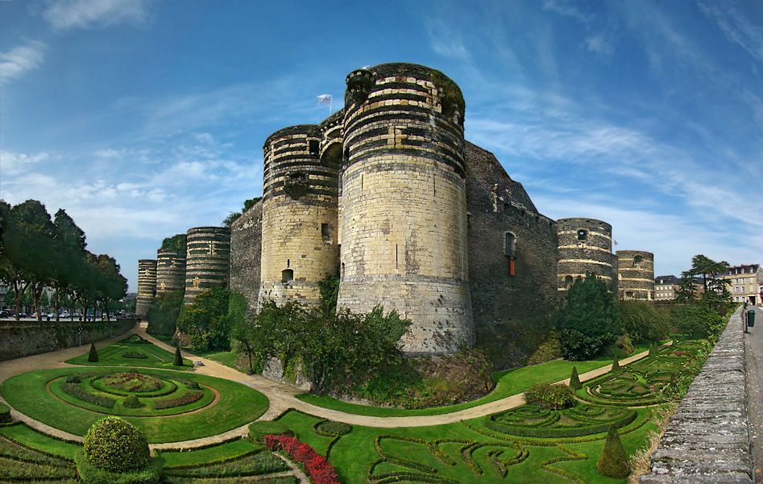

Angers, France
Located in the French region which was known as Anjou in the Middle Ages, today Angers is a bustling French city, home to around 150,000 people in the city and roughly 270,000 people in the greater metropolitan area. It's a place with great appeal to historians and travelers interested in discovering France's rich medieval history.
L’Université catholique de l'Ouest
Spend a semester or a year at this university in Angers, an historic and vibrant city in France's Loire Valley. All courses are taught in French. An intensive French program is also available for those whose French is not yet sufficiently advanced.